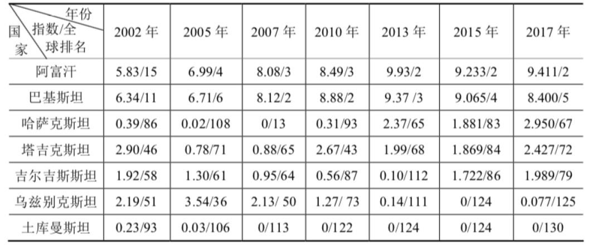

收录于合集
简 介
作者简介：
张宁，西北大学丝绸之路研究院研究员、中国社会科学院俄罗斯东欧中亚研究所研究员
文章来源： 《国际安全研究》2018年5期
责任编辑：苏娟
转载声明： 其他平台直接复制转载本平台文章，请务必清晰标注作者、文章来源期刊和转载来源平台（国政学人）。

【内容提要】 宗教极端主义对“一带一路”影响巨大，不仅威胁海外中国公民和财产安全，破坏地区安全稳定形势，影响项目建设成本和进度，还刺激贩毒等其他犯罪行为。中亚地区的极端主义主要表现为宗教极端主义，形成原因主要有社会环境、个人心理需求、错误的宗教教义和大国博弈等因素。有些人未能系统学习宗教知识却希望在宗教中寻求精神寄托，被极端势力鼓吹的错误宗教教义迷惑，进而加入极端组织并从事带有政治目的极端行为。一些大国出于地缘博弈的目的，资助和培训极端分子，也成为极端势力屡禁不绝的背后推手之一。反对极端主义是中国与中亚国家的重要合作内容，现已具备一定的法律基础，已形成比较有效的区域安全合作理念与模式，并已取得很多具体成果，有效地维护了地区稳定。当前和未来一段时间，双方宜在已有成果和经验教训基础上，综合考虑宗教、地缘与国际法基本原则等因素，继续完善上海合作组织等多边区域国际机制，加强国家宗教事务管理领域合作，利用宗教体系内部的自我管理和净化体系拨乱反正，同时防范个别大国炒作和利用宗教极端势力干扰地区稳定。
【关键词】 一带一路；极端主义；反极端主义；中亚国家；安全合作；上海合作组织
**“一带一路”的中心任务是通过落实“五通”，实现中国与沿线国家共同发展，保障地区稳定，探索国际治理和国际合作新模式，推动人类命运共同体建设。反对极端主义 是中国与中亚国家的共同利益，也是“一带一路”框架内的战略对接的契合点之一。**双方合作的意义不仅是消灭极端主义和极端势力，维护地区稳定，为发展创造和平安宁的环境，还在于探索合作理念与模式，为全球治理提供有益借鉴，为地区长治久安奠定法律、制度和机制基础。
中国与中亚国家开展反极端主义合作对整个地区的稳定具有重要意义。正如哈萨克斯坦总统纳扎尔巴耶夫认为：“一个民族越是痴迷于激进主义，这个国家的发展就越不稳定。原因很简单：激进主义在任何一个生活领域都不会带来好处，它只会阻碍进步。在经济中，这会导致鲁莽的冒险和轻率的浪费。在文化方面，一个民族多少世纪以来赖以生存的价值和传统就会销声匿迹。这个国家的免疫功能就会减弱，就会开始生病。”
中亚地区的宗教极端主义的产生原因分析
从学理上看， 极端主义具有价值理念的极端性和行为手段的极端性两个特点。所谓价值理念的极端性，是指排斥与之不一致的任何观点，但其坚守的某种理念脱离社会主流价值观，不认可社会公众普遍认可的价值观。所谓行为手段的极端性，是指为达到目的不择手段。 从法律术语看， 极端主义具有政治性，即“以推翻现行宪政制度和国家政权为目的”。乌兹别克斯坦学者认为，极端主义是具有极端观点、标准和意图的既矛盾又异常的行为现象，以危险和激烈的方式实现自己的政治目的，为建立自己的政权可采取任何手段。极端主义通常分为政治极端主义、民族极端主义和宗教极端主义。宗教极端主义就是借助宗教实施极端主义的行为和现象，其理论基础保守，默守陈规，实践中往往成为某政治力量的思想工具。
中亚国家独立后，将伊斯兰教作为恢复民族传统文化的主要方法之一，致使伊斯兰教日益盛行。在此过程中，宗教激进主义、宗教极端和邪教亦随之兴起。尽管当前中亚国家的综合治理措施效果显著，已在全社会形成反极端氛围，宗教极端思想的快速扩散势头得到有效遏制，公民的防范意识和鉴别能力提高，但伴随内外形势变化，宗教极端的活动方式和内容也有所改变，各国执政当局难以及时跟进调整应对措施，使得宗教极端思想的扩散和宗教极端组织的活动短期内仍难以根除。
极端主义和恐怖主义屡禁不绝是国内外因素共同作用的结果。中亚国家强力部门认为， 从国际看， 极端主义泛滥是国际现象，周边形势不稳定进一步加剧暴恐和极端势力增长； 从国内看， 经济社会问题、民众的宗教知识少、爱国主义教育不足、宗教人士水平低等，为极端主义扩散提供了可乘之机。除上述原因外，一些学者和研究机构通过对羁押的宗教极端分子的访谈，认为引发中亚地区极端主义的原因还有个人心理需求、宗教理论本身极具迷惑性以及地缘政治（大国博弈）等因素。
（一）寻求精神寄托
独联体部分机构曾针对中亚的宗教极端分子进行社会调研，结果认为来自中亚地区的宗教极端分子具有如下特征：
**第一， 宗教极端组织在中亚地区的组织、招募和传播对象主要有四类人群：一是边境交界地带；二是在俄罗斯、哈萨克斯坦、中东国家等境外打工的劳动力移民；三是女性和中青年人，尤其是失业青年以及已婚或有男友的女性；四是对社会有强烈不满心理的人，**如经常抱怨待遇不公、升迁无望、怀才不遇等。大部分宗教极端分子都是年龄在22-28岁的青年，大部分女性都是十六七岁的姑娘，其中约一半是跟随丈夫或男朋友，有的则是做性交易等。大部分宗教极端分子被招募系自愿，基本没有来自家庭、亲属和社会的压力或威胁。宗教极端组织的招募途径主要是互联网和社交网络。大部分宗教极端分子最初接触极端思想主要是在国外的清真寺和伊玛目讲经，招募中亚公民最容易的地方是俄罗斯和海外宗教学校。
第二，宗教极端分子家庭状况复杂，穷人、中产和富人家庭等各类阶层都有，而不是通常认为的以底层居多。 与世人印象不太相符的是，很多极端分子并不都是来自社会底层，而极端组织的领导者和骨干往往都是学者、商人、部分官员等社会精英。从社会交往理论角度看，这种现象很好理解：不是精英，难有组织、策划和筹资的能力，也难以影响和发展新成员。境外势力在中亚某地发展成员时，初期都是寻找有一定前途和抱负的“有识之士”，然后提供培训和资助。
第三，大部分中亚极端分子都是仅会做礼拜，缺乏系统宗教知识和理论，很多人对“圣战”的含义并不清楚。 在极端分子解释自己赴中东和巴基斯坦作战的动机中，与宗教有关的主要是：为进入天堂而履行神圣义务、打击伊斯兰教的敌人和叛教者、建立“哈里发国家” 与社会因素有关 的主要是：希望成为自己生活方式的积极实践者、为社会正义与公正而奋斗、保护弱者 与自身问题有关 的主要是：社交圈子狭窄、追求英雄主义、希望清苦修行、在祖国或俄罗斯等地生活困难、存在经济困扰等。报告认为，大部分成员加入极端组织的主要原因不是经济状况和教育程度，而是“抱团取暖”和宗教无知。大部分极端组织的成员都具有孤独、自卑、焦虑、挫折感、缺乏成就感和归属感、生活无目标、前进无方向等特征，他们希望被社会接受或关注，体现价值或解决困难，也寻求保护感，因此容易被社团招募。可以说，接受极端组织的说教以及参加极端组织的穆斯林真正感兴趣的往往不是其教义，而是其社团性。
中亚国家的宗教管理部门认为，极端组织发展成员通常有三个步骤： **第一步， 观察和挑选，即在各地寻找那些想出人头地的穆斯林。**极端组织来到某地后，开始并不立刻从事宣教活动，而是调查研究，寻找可以发展的对象，重点是各清真寺伊玛目（尤其是希望在宗教界扩大地位影响的伊玛目）。选中之后，通常会借口“开阔视野、丰富知识、扩大交流”等，资助其赴麦加朝圣和赴境外宗教学校或世俗学校学习或赴境外留学培训。 第二步，宣传带有极端内容的宗教激进主义并标榜“正宗”。 描绘美好清平世界，在兴利除弊和去旧迎新等旗号下宣传教义，还通过困难相济赢得信徒好感。待信徒的信仰和虔诚达到一定程度后，开始结合伊斯兰教义与其讨论社会现实问题，如贫富不均、社会不公、官员腐败、失业、裙带关系等，利用被说教对象的挫折或失落感，激发信徒对现实的不满，对社会和国家的憎恨以及对伊斯兰社会秩序的向往，同时树立自己的形象和威信。第 三步，在前两个阶段工作过程中，认真考察和发展信徒，待条件成熟后吸收其加入组织，听从组织安排，如传播带有宗教极端内容的教义、从事暴力恐怖活动等。 英国战争与和平报道研究所（IWPR）中亚分所所长苏尔丹纳扎罗夫认为，“政权和穆斯林社团解决不了现实问题，于是穆斯林就从极端组织中寻找答案和办法”。
（二）具有迷惑性的错误教义和教法
世俗国家在宗教管理过程中，对某一宗教的教义和教法的解经和讲经均由其国内权威机构和特定程序操作，不会放任自流。 但部分穆斯林仍认为境外（主要是沙特阿拉伯、卡塔尔、科威特和埃及等中东地区）的标准更权威更正宗，主要原因就是这些境外的带有极端内容的理论和主张“说辞完美且结构严谨”，加上利用现代的传媒宣传手段，如果不熟悉《古兰经》和圣训等伊斯兰教经典，很难辨别和反驳，对于宗教基础知识薄弱且见识较少的民众更是如此。
伊斯兰教派的宗教合法性和伊斯兰属性，由其秉承的教义和创制的教法与沙利亚法（即伊斯兰教法，是伊斯兰教的总规则）的关系决定。只要教派中有一种教义或某一条教法与沙利亚法产生原则性对抗关系，违背当地的公序良俗，即使该教派的其他教义和教法均符合沙利亚法，该教义和教法连同该教派也会整体失去宗教合法性和伊斯兰属性。若未形成原则性对抗关系，则该具体教义和教法的宗教合法性存疑，但该教派的整体宗教合法性和伊斯兰属性不受影响。在实践中，判断某一教义或教法是否与沙利亚法产生原则性对抗，需要结合历史条件、学派教法方式、教派生存条件、当地公序良俗等多方面因素，进行综合考量才能得出结论，并不是一件简单容易的事。很多宗教极端组织（伪教派）就是利用这一点打擦边球，迷惑和误导宗教知识薄弱的信徒。比如“赎罪与迁徙组织”、乌兹别克斯坦伊斯兰运动（简称“乌伊运”）、“伊斯兰国”等极端组织的宣传册和网上发布的材料中，就有很多歪曲“圣战殉教入天堂”和“塔克菲尔”等教义的内容。
历史上，“圣战殉教入天堂”教义是伊斯兰各国政府和各教派钳制民众思想的重要手段，凡是与战胜自己和战胜敌人有关的且符合统治需求的行为均被视为“圣战”行为，信众赎罪方式也由此多样化，例如孝敬父母、学习、看病、社交、克制欲望、与坏人坏事作斗争、发动战争等。全世界穆斯林均认同在承认一神论的基础上，只要坚持忍耐，向善止恶，都有可能进入天堂。可以说，经典的圣战教义体现为“圣战”行为多样性和赎罪方式多样性两大特点。相比之下，一些极端组织为迷惑穆斯林并招募“圣战”暴恐分子，表面上承认“圣战殉教入天堂”的基本教义，但将赎罪方式简化并极端化，认为“圣战”行为只有一种（消灭叛教者和异教徒），赎罪的方式也只有一种（殉教牺牲），从而否定其他赎罪方式，进而歪曲整个教义。
在阿拉伯语中，“塔克菲尔”意为“遮盖、隐藏、否认”。塔克菲尔理论是与伊斯兰信仰有关的评价判断理论，主要阐释三个判断是非的标准，即穆斯林与非穆斯林的区分标准、伪信的区分标准和叛教的区分标准。任何教派或学派对于塔克菲尔理论及其区分标准的阐释均不得违背“信仰裁判权专归真主”这一沙利亚法根本原则，即真主才是信仰的唯一裁判者，圣人仅肩负见证者、报喜者、警告者的使命。在穆斯林与非穆斯林的区分标准上，圣训明确规定穆斯林的标准是诵念清真言（即“万物非主，唯有真主；穆罕默德，是主使者”），且在紧急情况下，可不必诵念清真言的后半部分（即“穆罕默德，是主使者”）。一些极端组织的赎罪理论则声称，诵念清真言并接受其教义教法的人才是穆斯林。表面上，赎罪理论仅仅增加“接受教义教法”的附加条件，似乎更具保守性，但其是否接受教义教法需要判断，所以实际上它增加的是“对他人信仰进行了判断”，从而违背“信仰裁判权专归真主”的沙利亚法规定（任何人仅有权见证，但无权判断），将自己放在与真主同等的位置上，这是对真主的大不敬。
**从本质上看，伊斯兰宗教极端是 “伪教派极端主义”，其内涵包括四个方面：第一，行为主体假借教派之名。第二，极端思想和行为源于对某一学派部分理论的歪曲。第三，行为主体对理论的歪曲已足以使其自身丧失伊斯兰属性和宗教合法性。第四，行为主体的目的是为其自身利益诉求，而不是伊斯兰教教义所规定的利益诉求。**在正统伊斯兰教看来，宗教极端不是宗教，而是伪宗教，与真正的伊斯兰教没有任何关系，是借用伊斯兰教，将某一正统伊斯兰教派或学派的部分理论异化，并打着伊斯兰教旗号从事极端活动的利益集团。其理论和行为均属于正统宗教中的极端范畴，因此丧失宗教属性与合法性。
伪教派的迷惑性源于其宗教依附性。 由于伪教派不具备构建自身理论体系和歪曲某一学派整个理论体系的能力，因此，伪教派总是先通过歪曲某一学派理论体系的部分理论，炮制出符合其利益诉求的极端理论，而后再将这些极端理论移植到被歪曲学派的理论体系中，最终构建出一整套包裹着教派外衣的极端思想和行为体系。中亚地区的伊斯兰伪教派极端组织尽管名称各异，但从其所歪曲的学派理论来看， 可大致分为三类：一是伪苏菲派极端组织，代表是达瓦宣教团；二是伪什叶派极端组织，典型代表是马赫迪军；三是伪逊尼派极端组织，除达瓦宣教团和马赫迪军外，其余皆为此类。 伪逊尼派极端组织还可以再细分为三类：一是伪哈乃斐派极端组织，例如伊扎布特、巴基斯坦伊斯兰教协会、安萨尔联盟等；二是伪瓦哈比派极端组织，如天堂赞颂者、东突厥斯坦伊斯兰运动等；三是伪萨拉菲派极端组织，例如“伊斯兰国”、中亚圣战组织、哈里发战士、安拉使者团等。
（三）美国与西方国家的战略工具
进入21世纪以来，美国意识到尽管自己“实力强大并且仍将保持强大的实力”，但“美国的资源和影响力也不是无限的。在一个复杂的世界中，美国所面临的许多安全问题并不能快速和容易地解决”，尽管美国“凭借自身实力和地位发挥领导作用，但这并不意味着美国能够或者应该试图决定世界各地所有正在发生的事件的轨迹”。为维护世界领袖地位，美国积极推动战略转型。无论是奥巴马总统的“战略收缩”还是特朗普总统的“美国优先”，都是美国在国际社会面临更大竞争压力条件下的应对表现， 总体上呈现出三个特点：一是让盟友发挥更大作用。“美国将寻求动员盟国和伙伴分担负担，实现持久的结果”，鼓励盟友和伙伴承担更多责任，寻求盟友支持的集体行动，通过提高伙伴的自主能力，减轻美国负担。二是加强国际秩序、多边机制和战略同盟的支撑作用。“为了应对挑战，美国将继续与伙伴合作，通过多边机构解决冲突的根源以防冲突爆发，并在冲突爆发之后予以遏制和解决。”三是亚太再平衡。加强在亚洲、太平洋和印度洋的军事部署和影响力。
为配合战略转型，美国对外使用武力远比过去谨慎，所谓的“承担领导角色”实际表现为“有限介入”，致使地区不稳定因素长期存在并难以解决。无论其主观想法如何，现实效果却是在乌克兰、中东、印度洋、中南半岛、南中国南海、朝鲜半岛等地不断挑起话题，加剧地区紧张形势。俄罗斯学者认为，美国的这些做法非常类似“可控混乱”(Controlled chaos)。该理论源自20世纪70年代的企业危机管理，后被美国国务院和国防部引入政治领域，研究如何制造和利用危机。该理论认为，在开放体系的“有序”和“混乱”两种状态中间，存在“秩序失衡”（从有序向混乱发展）和“可控混乱”（从混乱向有序发展）两种发展方向和进程（中间状态）。尽管内外因素复杂多样，但若能有效引导甚至控制这些因素，可使整个体系向确定的方向变化，让失衡的体系获得新的平衡，并在这个过程中获益。美国认为凭借自己的超群实力，能够把握事态发展进程，通过有限介入，控制各地或各领域的热点问题，塑造对美有利的国际环境；通过制造地区紧张，消耗敌手精力，使其无力挑战美国霸权。
中亚地区的宗教极端主义的境外传播来源主要是在西亚北非，尤其是宗教学校留学的学生。 中亚国家的强力部门通常认为部分宗教极端势力的背后是中东大亨，也有部分得到美英等西方国家的情报部门支持，将其视作反对什叶派伊朗以及搞乱欧亚地区的工具。俄罗斯和中亚的情报部门一致认为，美英等西方情报机构与中东和阿富汗的恐怖训练营有密切合作关系，为其提供培训和活动资金，目的就是维系合作关系，避免自己成为袭击对象，同时将其作为大国政策的工具和抓手，在适当时机用于打击对手。一旦暴恐和极端活动在中东、中亚、南亚、俄罗斯等地升温，则中、俄、印、伊朗等地区大国必将卷入其中，可能出现很多不良后果，比如一些项目合作计划推迟落实，或被迫投入巨额维稳资金，或资本外流（金融资本流回美国避险），或出现难民危机，或为美西方干涉提供“借口”等。无论何种结果，最终都会干扰地区国家正常发展，从而确保美国的相对优势。
另外，西方经常实施双重标准，无端指责中亚国家的宗教管理和维稳措施。 中亚国家内部一些政治派别和美国等西方国家在发生暴恐事件时，有时以保护信仰自由为名，或者转移话题，强调问题的社会性（不平等、发展落后、腐败等），挑拨社会矛盾，对执政当局形成压力。比如2005年安集延事件，乌兹别克斯坦政府认为该事件是极端组织及其支持者以社会问题为借口，企图推翻现政权、建立政教合一国家的犯罪行为。西方则认为是乌兹别克斯坦内政缺陷引发，属社会问题，是公民维权行为，即使针对暴恐分子，也不应过度使用警力和武力。
中亚地区的极端主义行为及其对“一带一路”的影响
截至2018年初，中亚各国法院确认的禁止在本国境内活动的恐怖和极端组织名单中，哈萨克斯坦有21个，吉尔吉斯斯坦共确认20个，塔吉克斯坦法院共判处18个。乌兹别克斯坦和土库曼斯坦官方从未正式公布禁止在其境内活动的境外伊斯兰极端和恐怖组织名单，但据上海合作组织网站消息，截至2011年底，乌共认定26个极端和恐怖组织。 2000 年至今，除宣传极端主义外，中亚地区的宗教极端和恐怖行为主要有五类：
一是针对强力部门和护法机构的暴力活动。 主要有：（1）2004年，“吉哈德”组织塔什干总检察院大楼休息厅爆炸事件；2009年8月，“吉哈德”组织刺杀乌兹别克斯坦内务部刑侦和反恐局副局长哈桑上校。（2）2009年5月，“乌伊运”袭击乌兹别克斯坦汉纳巴德和安集延的警察局。（3）2011年5月17日，“哈里发战士”在哈萨克斯坦阿克纠宾托别市国家安全委员会大楼前发生自杀性爆炸；2011年5月24日，“哈里发战士”在首都阿斯塔纳市国家安全委员会办公楼前发生汽车爆炸。（4）2016年7月18日，哈萨克斯坦阿拉木图市中心地区的内务局附近发生枪击事件，2名警察丧生。（5）2010年底，“秉公执政者的军队”组织曾策划在吉尔吉斯斯坦比什凯克市警察局和体育场附近制造汽车爆炸事件（未遂）；2011年，该组织在比什凯克市杀死3名警察。
二是针对外国目标的袭击活动。 主要有：（1）2000年5月18日，“东突”解放组织成员武装抢劫哈萨克斯坦阿拉木图世界银行。（2）2003年3月26日晚，“东突”武装分子袭击一辆从吉首都比什凯克返回喀什途中的新疆定期旅客班车，杀害车上全部21名乘客（其中中国公民18人）。（3）2004年3月28日至4月1日，“乌伊运”在乌兹别克斯坦的塔什干和布哈拉等地制造多起爆炸事件，共造成47人死亡；6月，又在塔什干市的美国驻乌兹别克斯坦使馆、以色列驻乌兹别克斯坦使馆和乌兹别克斯坦总检察院附近制造3起自杀性爆炸事件，造成5人死亡，5人受伤。（4）2016年8月30日，中国驻吉尔吉斯斯坦大使馆遭自杀式汽车炸弹袭击，袭击者当场丧生，3名吉尔吉斯籍安保人员受伤，使馆部分建筑遭严重破坏。
三是针对伊斯兰宗教人士的刺杀活动。 主要有：（1）2009年7月，“乌伊运”刺杀乌兹别克斯坦塔什干“库克里达什”宗教学校副校长和批评瓦哈比教派的塔什干大伊玛目安瓦尔。（2）同年8月，“乌伊运”刺杀卡什卡达里亚州的大伊玛目伊斯玛仪（未遂）。
四是武装暴动，包括抢劫军械和武器弹药。 主要有：（1）2005年，阿克罗米亚组织制造乌兹别克斯坦安集延骚乱事件。（2）2010年6月22日，哈萨克斯坦曼吉斯套州首府阿克套市发生越狱事件，21名囚犯在外部武装人员接应下脱逃。（3）2011年7月12日，哈萨克斯坦卡拉干达州巴尔喀什市一所监狱发生囚犯集体持枪越狱未遂事件，16名囚犯被炸死。（4）2016年6月5日，哈萨克斯坦阿克纠宾托别市一伙不明身份人员袭击两个武器商店和一处军营，并与当地警方和军人激烈交火。（5）2010年9月3日，“安拉使者团”组织在塔吉克斯坦索格特州胡占德市打击有组织犯罪处办公楼附近制造自杀式汽车爆炸事件，造成2名警察死亡和近30名民众受伤；9月19日，该组织又在卡马罗布峡谷袭击政府军车队，造成25名官兵死亡；2010年秋至2011年春，该组织在塔吉克斯坦东部地区拉什特谷地与政府军作战。（6）2015年9月4日，塔吉克斯坦伊斯兰复兴党成员袭击瓦赫达特市内务部、首都杜尚别的一个警察局和杜尚别机场，抢夺大量武器弹药并导致8名警员丧生。
**五是宣誓效忠“伊斯兰国”（ IS）和努斯拉阵线等中东地区的极端组织，招募赴中东作战人员，并接应从中东回流中亚的暴恐分子。**主要有：（1）“天堂颂赞者”组织属于努斯拉阵线的分支机构，由吉公民2014年建立，主要通过“沃塔普”（WhatsApp）和“同班同学”（www.ok.ru）网发布极端思想和招募吉南部地区公民赴中东参战，人数约180-200人。（2）2014年10月，“一神论和圣战”宣誓效忠在吉从事招募活动，号召吉公民赴中东参战。（3）“布哈里伊玛目营”主要由吉尔吉斯斯坦南部地区的乌兹别克族和维吾尔族人组成，人数约1000人，20世纪80年代和90年代出生的青年居多，经土耳其（或俄罗斯和土耳其）赴叙利亚参战，其部分成员返吉后进行招募活动。车臣人对该组织帮助较多。（4）2014年，“乌伊运”向“伊斯兰国”效忠，此后，多次参与阿富汗北部与中亚国家交界地带的恐怖和武装交火事件。
2015年9月，俄罗斯空袭叙利亚后，“伊斯兰国”和“征服阵线”等中东地区的极端组织实力大幅削弱，开始化整为零，分散至世界其他地区继续从事极端活动。 与此同时，巴基斯坦和阿富汗政府也加大 力度打击境内的暴恐和极端组织，这些外部因素相结合，使得中亚安全形势出现新态势，给中亚各国带来新的安全隐患：
一是犯罪手段升级，抢夺军械库和自杀性爆炸在沉寂十几年后重新成为主要暴恐手段。 2016年，在哈萨克斯坦境内的阿克托别和阿拉木图爆炸案以及在吉尔吉斯斯坦首都比什凯克袭击中国驻吉使馆的爆炸案表明，如果说中亚地区的极端分子之前杀害军警的主要原因是报复，现在则是希望获得更大的威力、更多的武器弹药和爆炸装置，以便从事更具破坏力和影响力的暴恐活动。
二是网络已成为恐怖和极端犯罪的主要联系、组织和指挥手段。 从中亚强力部门破获的案件看，极端主义和恐怖主义的传播途径主要有：网络等媒体，境外宣传品，境外恐怖培训营，非法传教，赴海外经商、留学、旅游、工作等人员，监狱等执法机构管理不善等。如果说2000-2010年中亚地区的极端思想主要由从中东留学归来的宗教人士带入的话，那么随着“阿拉伯之春”后中亚国家收紧宗教出国留学政策以及通讯技术发展，网络和手机成为最主要的传播途径。暴恐和极端组织利用互联网难以监控海量信息的弱点，通过下载APP（尤其是社交软件、境外各类云盘网站、P2P等免安装的绿色软件）宣传暴恐和极端思想、散发带有暴恐和极端思想内容的视频和其他材料、招募人员和筹集资金、组织和指挥暴恐或极端活动等，作案方式更加隐蔽和不可控，打击难度极大。“我的世界”（www.mail.ru）、“在线联系”（www.vk.com）、“同班同学”（www.ok.ru）、脸谱（www.facebook.com）等社交网站是暴恐和极端组织最喜欢的传播和联系平台。
三是境外极端分子回流中亚成为最大的安全威胁。 据俄罗斯和中亚强力部门2016年估算，自俄罗斯、中亚和高加索地区赴中东作战的极端分子大约5000-7000人，其中俄罗斯2800-2900人，来自中亚约2000-3000人；来自中亚地区的暴恐和极端分子的年龄主要集中在20-35岁。2018年3月，“”伊斯兰国”通过社交网站发布消息，号召其成员和支持者赴埃及西奈半岛（西奈分支）和阿富汗（呼罗珊分支）继续“圣战”。转移路线有三：一是俄罗斯高加索——里海北部——中亚——阿富汗北部，此路线最方便，尤其是巴达赫尚地区；二是通过巴基斯坦西部到阿富汗；三是伊朗东部到阿富汗，比较安全，但费用较高。俄罗斯强力部门认为，此命令使得在阿富汗的“伊斯兰国”成员（包括效忠者）已由2017年的四五千人增加到2018年春季的近万人，其中战斗人员约7000人，后勤服务约3000人。中亚和南亚国家的“全球恐怖指数”排名见表1。
表1 中亚和南亚国家的“全球恐怖指数”及其排名 ****

资料来源：英国经济与和平研究所（InstituteforEconomics& Peace）历年发布的 “全球恐怖主义指数”（GTI:GlobalTerrorismIndex）（指数0～10分，指数越高表明形势越严峻，排名越靠前）。
** 从上述中亚地区的宗教极端主义的活动主体、对象、方式和烈度等可知，其对“一带一路”的不利影响和现实威胁是客观存在的。**
第一，在中亚的中国公民和企业容易成为袭击对象。 尤其是吉尔吉斯斯坦、塔吉克斯坦和哈萨克斯坦三国。主要原因是一些项目和人员所处地域偏僻、华人面孔容易识别、防范意识差等。2016年，吉尔吉斯斯坦首都比什凯克的中国大使馆被炸，说明“东突”分裂势力在中亚活动加剧以及从中东回流的极端分子已开始针对中国人的恐怖行动。
第二，干扰各国国内发展，增加项目投资成本和风险。 比如2015-2016年极端组织多次出现在土库曼斯坦马雷地区的天然气田附近，迫使土政府加大油气田周边警力，并调整国内军事部署。2016年6月，哈萨克斯坦境内暴恐事件多发时，宣布全国进入为期六个月的“黄色”警戒状态，阿克托别市则进入最高的“红色”警戒状态。纳扎尔巴耶夫总统在随后发表电视讲话时，除强调严打暴恐袭击外，更关注防范“颜色革命”，避免个别暴恐事件引发连锁反应，进而更大范围地威胁国内稳定。受安全环境影响，很多中国企业不得不加强安保和保险支出，从而增加运营成本，部分企业甚至可能因此撤出，尤其是地处偏僻的矿产开采、油气管网、公路运输等。
第三，故意损害中国形象。 通过执行双重标准，尤其是每当中国境内严厉打击宗教极端或严格出入境管理的时候，“三股势力”就散布谣言，将正常的宗教事务管理和边境管理歪曲成为打压穆斯林或维吾尔族，并企图借此挑拨中国与中亚国家关系，煽动中亚地区的跨界民族对中国的误解。
第四，毒品问题严重。 除毒品本身危害以外，贩毒是恐怖和极端组织的重要收入来源，另外，贩毒集团腐蚀政府官员，加剧政治腐败。中亚不仅是阿富汗毒品外运的主要通道，自身也消费大量毒品，对中亚的社会稳定造成严重影响。据阿富汗禁毒部部长称，阿富汗每年约生产六七千吨鸦片，加工成三四百吨海洛因，除5%自用外，其余全部销往境外，其中经过中亚约90吨（4/5到俄罗斯或经俄罗斯到欧洲），毒品贸易额约670亿美元（阿富汗本身约获得120亿美元），吸食阿富汗毒品的中亚人口到2012年已约1000万。
中国与中亚国家的反极端主义合作中国与中亚国家的反极端主义合作
当前，中国与中亚国家的反极端主义合作已具备一定的法律基础和法律实践，还有上海合作组织等比较成熟的国际合作机制与合作模式。早在20世纪90年代（即中亚国家独立后），中国与中亚国家的防务（国防部、总参、边防等）、情报、执法（公安、海关、缉毒等）、司法（司法部、检察院、法院等）、智库等官方和民间机构就已经开始密切交流，签署了双边司法协助协定和引渡条约，对司法协助的联系途径、范围、请求书的格式和内容、请求的执行、通知执行结果、相关费用、可以引渡的犯罪、可以拒绝引渡的情况、引渡请求及所需的文件、羁押被引渡人、移交被引渡人等做出详细规定。除联合反恐演习外，双方还多次举行引渡嫌犯、联合安保、情报交换、人员培训、研讨会等活动。
另外，中国与哈、吉、塔、乌等四个中亚国家在上海合作组织框架内已签署关于边境安全、打击“三股势力”、打击有组织犯罪、信息安全和禁毒等领域的合作文件，比如《打击恐怖主义、分裂主义和极端主义上海公约》（2001年6月15日）、《反恐怖主义公约》（2009年6月16日）、《成员国合作打击恐怖主义、分裂主义和极端主义构想》（2005年7月5日）、《关于查明和切断在上海合作组织成员国境内参与恐怖主义、分裂主义和极端主义活动人员渗透渠道的协定》（2006年6月15日）、《上合 组织 成员国 组织和举行联合反恐演习的程序协定》 （2008年8月28日）、《关于反恐怖机构资料库协定》（2004年6月17日）、《成员国反恐专业人员培训协定》（2009年6月16日）、《上海合作组织成员国 打击恐怖主义、分裂主义和极端主义合作纲要》 （2007-2009年、2010-2012年和2013-2015年）等。
从法律概念界定角度看，中国与中亚国家对“极端主义”和“极端主义活动”的法律界定基本相同，均强调极端主义的政治性，即具有“以推翻现行宪政制度和国家政权为目的”的特点。与中国一样，中亚国家将“宗教极端行为”与“宗教行为”相区别，从而为辨别和打击宗教极端行为提供界定标准。 中亚国家的宗教管理法律规定，宗教行为是指信众满足信仰需求的行为，至少包括以下内容： （1）宗教社团的内部宗教行为。即宗教社团根据自身章程和约定而进行的内部组织管理行为，如人员聘用、经费使用、财务和后勤服务、内部学习等。（2）宗教社团的外部宗教行为。即宗教社团与信众、与国家机关、企业、社团、国外伙伴等其他法人和自然人等其他主体之间开展的行为。如宗教典礼和仪式、宗教学校、宗教社团从事经营行为、出版和宣传、发展信徒、传教、宗教对外交流与国际合作等。（3）信众的自我宗教行为。即宗教信徒为满足自身宗教需求而进行的行为，如念经、讲经、礼拜、封斋、祈祷、烧香、拜佛、弥撒、过宗教节日、父母对自己子女的宗教教育等。（4）与信众和宗教社团相关的辅助宗教行为。即为宗教社团和信徒提供后勤服务和其他辅助服务的行为，如生产宗教行为用品、提供相关宗教行为场地、印刷宗教出版物、传媒制作和宣传涉及宗教内容的节目等。此类行为虽不是完全意义上的宗教行为，但与宗教行为相关度极大，通过《信仰自由和宗教社团法》予以规范。与此相应，非法宗教行为就是违反国家宗教管理规定和法律的行为。宗教极端行为不属于宗教行为，不是为了满足个人精神需求的行为，而是追求政治目的违法犯罪行为。
为保障“一带一路”在中亚地区的实施，当前和未来一段时间，中国与中亚国家宜 在已有成果和经验教训基础上，综合考虑宗教、地缘与国际法基本原则等因素，延续协商与和平解决争端、尊重国家主权、维护联合国权威、发展互利双赢的区域合作、尊重多样文明等既有主张和立场，并在以下三个领域加强反极端主义合作：
一是加强宗教管理领域合作。 尽管从法理上看，宗教极端主义的本质是政治现象，不是宗教现象，但因宗教极端主义的理论和行为体系通常会“挂靠”在某一宗教教派身上，很多信众会不明真相受其蛊惑，所以仍与宗教有关。若想长治久安，保障宗教有序发展，实现社会和谐，去极端化应是宗教事务管理的一部分，需从全社会宗教事务管理的整体角度设计规划，而不仅是强力部门的反恐维稳。
宗教世界向来无绝对和完全统一的标准，各地都会结合本地实情，建立符合本身特点的理论和行为体系。历史和实践证明，体系覆盖是消灭宗教极端的最有效治本之策之一。也就是说，解决宗教极端问题的最好办法之一，是尊重宗教自身发展规律和特点，利用宗教体系内部的自我管理和净化体系去拨乱反正，矫正偏离行为，从宗教理论入手，通过建立权威和完善的教义教法体系，覆盖（替代）极端势力的理论体系，使善良信众具备辨别能力，不再相信极端势力的说教，远离极端，使极端主义失去生存和发展的根基。
为此，中国与中亚国家的宗教管理部门和研究机构等宜经常交流，除宗教事务管理经验教训外，还要彼此支持乌理玛委员会(由各国穆斯林民主选举产生的最权威伊斯兰学者)，经公认的特定程序，在传统的、倡导温和中庸的教义基础上，完善各自的教义教法体系。通过广泛宣传等措施，在教义教法与国家方针政策间建立合理逻辑联系，并搭建行为规范框架，引导穆斯林与所生活的社会相适应。另外，中国还可与中亚国家建立宗教活动监管体系，防止非法宗教活动跨地域流窜；建立反极端专家智库合作机制，为反极端提供智力支持；制定传媒、互联网和出版物等监管协调体系和落实措施，共同应对涉恐和涉极端的网站、出版物、材料等。
二是加强上海合作组织等区域合作机制框架内的安全合作。 当前，遏制宗教极端主义已成为世界性难题，单凭一国之力难以应对，必须加强区域合作。上合组织是一个综合性的区域国际组织，是中国整合西部周边资源（欧亚大陆中部）的重要依托和推进“丝绸之路经济带”的平台。印巴加入后，该组织成为一个从北冰洋到印度洋的横跨欧亚大陆中部的合作带。另外，俄罗斯主导的集体安全条约组织和独联体反恐中心也是中亚地区的重要反恐和反极端合作机制。
宗教极端势力凭借其丰富资金和发达网络，为各地的极端和恐怖分子提供资助和培训，使得境内境外密切勾结，联合作战，机动性强，隐蔽性好，极大地增加各国反恐难度。因此，宜借助上海合作组织、集体安全条约组织、独联体等各区域合作机制框架内的国际合作，争取减缓或遏制住外部极端势力在上合组织成员国周边的蔓延势头，尽可能将来自中东和南亚的安全风险抵御在境外，严防“三股势力”勾连成片，防止极端势力经中亚和阿富汗、通往西亚和南亚的通道，进而将中东、巴基斯坦西部、阿富汗、中亚等地连为一体，形成统一的活动区域（传播极端思想、发展成员、培训业务、策划暴恐等），从而干扰地区稳定。
中国可参考与塔吉克斯坦、阿富汗和巴基斯坦2016年8月4日建立的反恐合作“四国机制”，与哈萨克斯坦和吉尔吉斯斯坦建立类似边境安保机制，就反恐形势研判、线索核查、情报共享、能力建设、联合训练、人员培训等方面开展协调，从而形成两条防线：一是中亚国家与阿富汗的交界地带（最外围防线）；二是中国与中亚国家的交界地带（内层防线）。
三是防范美国等西方国家在中亚和阿富汗制造不稳定。 北非和西亚地区的动荡表明，极端势力往往是国内和地区骚乱的组织者和实施者，而很多极端势力都与美国等西方国家有联系，成为大国在阿拉伯地区的利用工具。中国和中亚国家绝不能允许这种现象在中亚重演。对一些西方大国而言，遏制中、俄发展的最好办法之一，就是在中、俄周边制造事端，牵涉两国精力，或者纵容暴恐和极端分子回流中亚、俄罗斯和中国。这种做法在中东已发生。为此，中国与中亚国家宜通力合作，警惕外部势力在阿富汗和中亚加强军事影响，防止阿富汗局势恶化引发地区动荡，拒绝利用媒体和非政府组织干扰中亚事务。
另外，美国和北约自2014年起从阿富汗撤军对地区安全稳定影响巨大。据联合国驻阿富汗办事处数据， 2017年，阿富汗有10 453名平民死伤于恐怖袭击（死亡3438人，伤7015人）。伤亡数量是2016年3500人的3倍。伤亡主要来自自杀性爆炸，少部分是非法武装与政府军的武装冲突。在万余名人员伤亡中，42%由塔利班行动造成，10%由“伊斯兰国”所为，13%由其他武装势力导致，35%是不明肇事者所为。国际社会应支持阿富汗重建，使其国内和平与和解进程建立在尊重《阿富汗宪法》的基础上，由阿富汗人主导、阿富汗人所有，并通过经济发展实现长久稳定。在此过程中，发动阿富汗战争推翻塔利班政权的美国和北约应承担起责任，努力维护阿富汗国内稳定，不能甩包袱，让阿富汗政府和军队过早担负维稳任务，以至于暴恐和极端势力回潮。
结论
随着地区和整个世界往来交流愈加频繁，安全已具有“共同、综合、合作、可持续”的属性，需要统筹传统安全和非传统安全，通过协商、对话与合作，在尊重和保障各国利益的基础上，谋求各国和本地区稳定和秩序。自2013年中国提出“一带一路”倡议至今的实践证明，只有加强反极端主义合作才能确保“一带一路”合作项目稳妥落实，反过来说，也只有深化“一带一路”合作才能更好地消除极端主义的社会基础，二者是互为表里、相辅相成的关系。尽管极端主义可能对“一带一路”框架内的各领域合作带来风险，但“一带一路”建设本身也是应对极端主义的最佳途径和方式。风险需在合作过程中逐步化解，而不能坐等风险消除后再推动合作。
从中亚地区已发生的事件看，造成当前极端主义屡禁不绝的主要原因是极端势力鼓吹的宗教理论依附于某宗教激进主义教派，并根据自己的政治意图做出修改，因此极具迷惑性，尤其容易欺骗那些具有挫折感或怀才不遇的中青年。另外，一些大国为维持自身优势，将极端势力作为博弈工具，资助和培训极端分子，企图借助暴恐事件和地区动荡削弱其他国家的精力，干扰其发展。
中国与中亚国家的反极端主义合作自苏联解体后便已开始，双方努力探索有益且有效的区域安全合作理念和模式，至今已在双边和多边法律与合作机制方面形成共识，并在联合安保、联合演习、侦缉与抓捕引渡、人员培养、情报交流等诸多具体领域开展多年合作实践。为继续加强反极端主义合作，未来宜关注宗教事务管理领域的交流，完善上海合作组织等多边区域国际机制，还要防范大国炒作和利用宗教极端势力。
*注释及参考文献详见原文
声明
此文由国政学人微信公众平台编辑，欢迎转发分享，转载请务必标注来源。